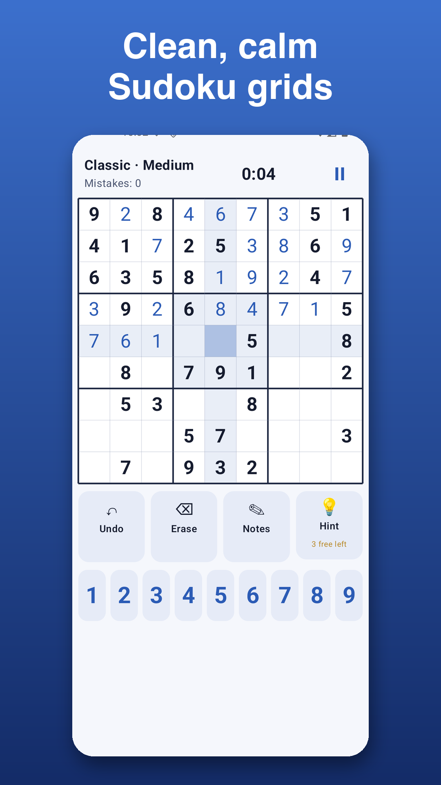
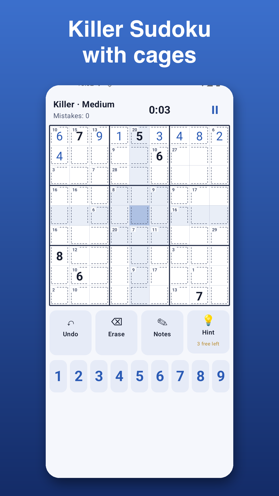
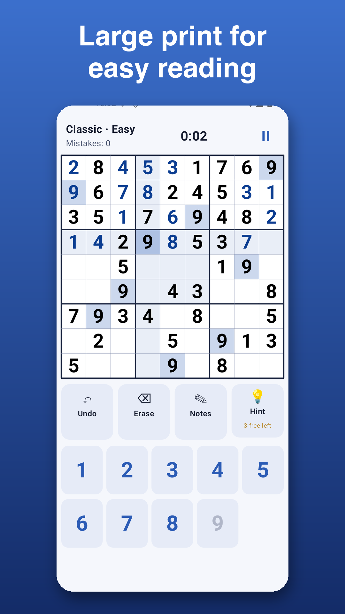
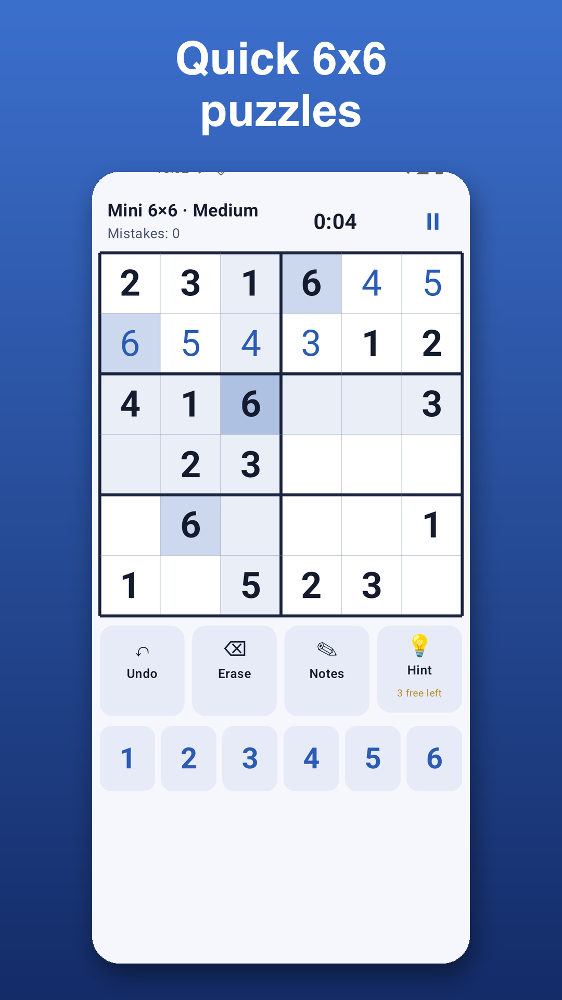

Sudoku Daily
Classic, Killer & Mini Sudoku with a daily challenge - free and offline
Sudoku Daily brings classic 9x9 Sudoku, Killer Sudoku with cages, and quick Mini 6x6 puzzles in five difficulty levels. Every puzzle has exactly one solution. Daily challenges with streaks, pencil notes with auto-notes, hints, large-print mode, dark theme. Free to play, works offline, no sign-up.




Support
Questions or feedback? Email xprin1company@gmail.com.